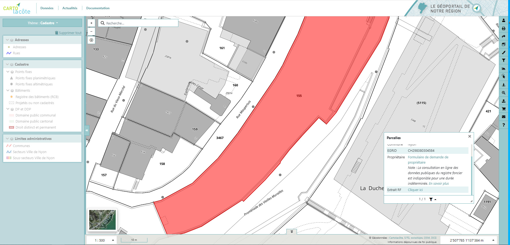

Interrogation¶
Données¶
L’interrogation d’objets peut se faire de deux façons :
Avec un simple clic
En dessinant un rectangle avec la touche CTRL enfoncée
Les résultats sont affichés en bas à droite de la carte, séparés en groupe selon leur couche. Il est possible de faire défiler les résultats avec les flèches précédant et suivant (en bas), l’objet sera mis en surbrillance sur la carte. Il est également possible de filtrer les résultats selon leur couche.
Registre foncier¶
En choisissant le plan cadastral comme fond de plan et en interrogeant une parcelle, un lien « extrait RF » renvoie vers la plateforme de consultation des données du registre foncier intercapi (Etat de Vaud).
Si vous ne disposez pas d’un accès à intercapi, vous pouvez en faire la demande en adressant un mail à rf.inspectorat@vd.ch en précisant votre nom, votre prénom et votre fonction et en mettant en copie la personne responsable de votre entreprise ou administration (le Secrétaire Municipal pour la ville de Nyon par exemple).
Pour le grand public, une demande par mail et au moyen d’un formulaire doit être réalisée. Un lien vers le téléchargement de ce formulaire est également proposé lors de l’interrogation de la parcelle.
